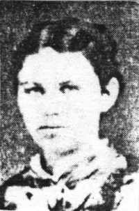
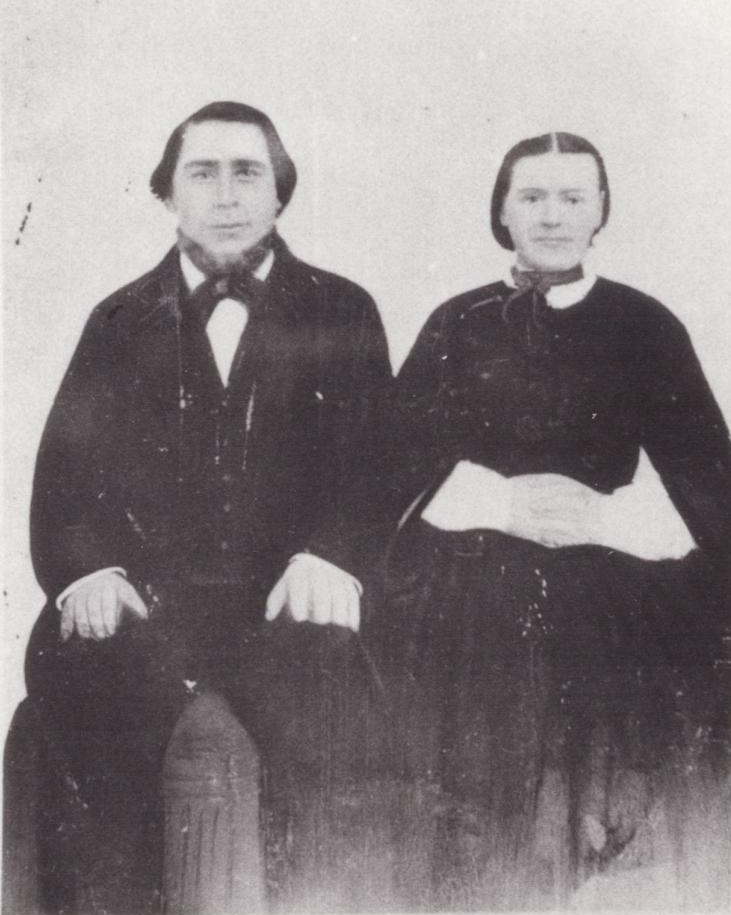

 Mettie Katrina Jensen, born 11 August 1826 in Åby, Ålborg, Denmark, the daughter of Niels Christian Nielsen and Kirsten Petersen. There were many children in the family, but she was the only one that joined the Church of Jesus Christ of Latter-Day Saints. She married Jens Nielsen Jensen in 1857. They had five children. Nels Jensen died in Denmark and Karen Marie died on the ship as they were coming to Amric. She had the measles and was buried in the ocean They left Denmark to come to the United States in 1861.
Grandmother walked across the plains with a hand cart company. She was pregnant at the time. She was a very small lady and was a practical nurse. They got to Utah in 1864 and settled in Fountain Green. Finished raising their family: Kren Maria, James Chrstian and Nelsena Katrina, my mother. Thre were a lot of Indians and grandmother was awful afraid of them. Evertime she baked bread, the Indians could smell it baking so she would always share. She was always fraid they would steal the children. They wanted her beads and rings; she would always wear amber beads.
Whenever any of the neighbor ladies got sick, or had a baby, they wanted her as she knew how and they couldn't always get a doctor. She would go back several times to bathe and take care of them.
 She always raised chickens, a big garden nd a lot of fruit. She also worked in the Relief Society. She and the other ladies would go gleaning. They would give the wheat they got to the Relief Society. She always enjoyed doing for others.
They lived in Fountain Green for several years, then the President of the Church sent them and several families on a mission to Colorado to settle there. She disliked much to leave her home and friends again. They sold the farm and put what they could in covered wagons and went across the desert again. There was quite a company of them. The Lord protected them and the Indians did not bother them, although they saw a lot and they were always afraid they might. The settled in Sanford, Colorado where grandmother helped the sick. Kept a home nd finished raising the family. After grandfather died in 1901, Auntie Maria and family moved in her home for a few years, then they went to Idaho. Mother, father and family moved in as her house was larger and grandmother could not live alone. Grandmother was sick quite a lot but she helped mother with the babies such s rocking them and spoiling them. We loved and enjoyed her so much. She lived to be 84 years old. She was a darling grandmother and miss her very much. Her greatest joy was riding in a covered wgon on the 24th of July, which my fther always drove.
Written by Edna Davenport